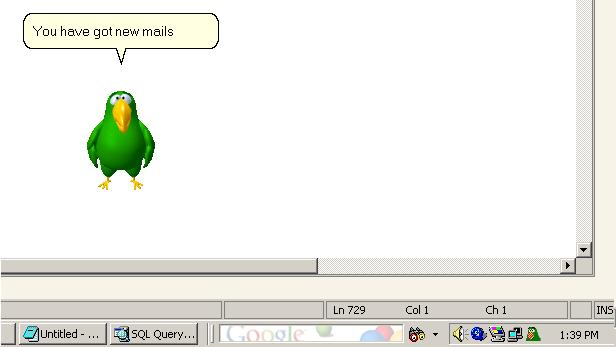

This article will show you how to create your own Gmail Notifier kind of application that checks the new mails using recently introduced Gmail Atom Feeds and speaks the details of the mail using Microsoft Agent.

Source Code:
Using Google ATOM feeds
Google has recently introduced feature that allows you to get an abstract of the mails using ATOM feed reader.
We use the WebRequest object to get the ATOM feeds.
We can connect to the GMail site at: https://mail.google.com/mail/feed/atom
This site requires basic authorization that we send in the request headers.
The following code shows how to send the request and receive the atom feed. You may have to connect through a proxy. (The code for the proxy usage is not explained here)
wrGETURL = WebRequest.Create("https://mail.google.com/mail/feed/atom");
if(clsMain.g_UseProxy)
{
wrGETURL.Proxy = clsMain.GetProxy();
}
bytes = Encoding.ASCII.GetBytes(txtUserName.Text.Trim() + ":" + txtUserPassword.Text.Trim());
wrGETURL.Headers.Add("Authorization", "Basic " + Convert.ToBase64String(bytes));
Stream feedStream = wrGETURL.GetResponse().GetResponseStream();
NOTE: Differing from the site stated above, the site stated by Google is 'https://gmail.google.com/gmail/feed/atom'. I was not able to connect to this using this code. May be some other kind of authorization is required.
The response that you get is in XML Format as shown below:
<?xml version="1.0" encoding="UTF-8"?>
<feed version="0.3" xmlns="http://purl.org/atom/ns#">
<title>Gmail - Inbox for anupshinde</title>
<tagline>New messages in your Gmail Inbox</tagline>
<fullcount>38</fullcount>
<link rel="alternate" href="http://mail.google.com/mail" type="text/html"/>
<modified>2005-09-11T14:01:39Z</modified>
<entry>
<title>New result arrived</title>
<summary>Dear Sir,
A new result has arrived for the following candidate: Name: Anup Shinde
RemoteIP …</summary>
<link rel="alternate" href="http://mail.google.com/mail" type="text/html"/>
<modified>2005-09-11T13:58:15Z</modified>
<issued>2005-09-11T13:58:15Z</issued>
<id>tag:gmail.google.com,2004:1181165390179818642</id>
<author>
<name>anup</name>
<email>anup@micromacs.com</email>
</author>
</entry>
.....
.....
.....
</feed>
Parsing the ATOM feeds
Atom feeds can be parsed yourself, or you can used a ready made Atom feed parser. Not to take too much trouble creating that, I have used the "Atom.NET" libraries available from the open-source library at http://atomnet.sourceforge.net/
Just download the "Atom.NET.dll" and add a reference to the project. If we are not using proxy, we need not create the web-request as Atom.NET libraries can automatically create it for us. Unfortunately, Atom.Net libraries do not have a support for proxy. So we need to get the response by ourselves and send this response stream to Atom.NET library. Once we create the instance of the Atom feed, we can loop through the entries as shown below.
Stream feedStream = wrGETURL.GetResponse().GetResponseStream();
Atom.Core.AtomFeed myFeed;
myFeed = Atom.Core.AtomFeed.Load(feedStream);
// Get the date and time of the feed.
strFeedTime = myFeed.Modified.DateTime.Day.ToString() + "-"
+ myFeed.Modified.DateTime.ToString("MMM") + "-"
+ myFeed.Modified.DateTime.Year.ToString() + " "
+ myFeed.Modified.DateTime.TimeOfDay.ToString();
feedTime= DateTime.Parse(strFeedTime);
Atom.Core.Collections.AtomEntryCollection ents = myFeed.Entries;
foreach(Atom.Core.AtomEntry ent in ents)
{ {
FromName = ent.Author.Name;
Title = ent.Title.Content;
Content = ent.Summary.Content;
//Do something else
}
Using Microsoft Agent 2.0
Once the feeds have been downloaded and parsed, you can do literally anything with it. Our purpose is to speak these feeds for the user using Microsoft Agent 2.0.
Most probably you will have the Microsoft Agent installed. Stating the requirements is out of the scope of this article. Please see the Microsoft Agent sites stated below
Developers, please see the home page at: http://www.microsoft.com/MSAGENT/default.asp
The end user downloads can be found at: http://www.microsoft.com/MSAGENT/downloads/user.asp
I found an interesting site that offers Microsoft Agent Character downloads. Please see http://www.e-clips.com.au
We will receive feeds in text format, which need to be converted to speech. Don't worry. Microsoft Agent has a simple Speak(text) method, which can be used for this. MS-Agent works using SAPI 4.0. Therefore you will also have to download SAPI 4.0 runtime available from the links above. Windows XP/2000 users will already have these. Without the SAPI 4, you will not be able to hear voice.
NOTE: SAPI 5.0 TTS is much better than SAPI4 TTS. It is possible to connect MS-Agent with SAPI5.0 TTS, but that is out of the scope of this article.
To use Microsoft Agent in your project, go to the Toolbox and open "Add/Remove Items". Select "Microsoft Agent Control 2.0"(AgentCtl.dll) from COM components and click OK. You can see a component with a "Spy" like icon in the toolbox. You need to place this on the form.
The code for using the character is shown below:
// Load the character. Here we did not specify the file path.
// The character will be searched at the default path(s).
agentMain.Characters.Load("agentAssistant", "merlin.acs");
agentRef = agentMain.Characters.Character("agentAssistant");
// Assign a position for the character
agentRef.Left = (short)(this.Left + this.Width + 10);
agentRef.Top = (short)(this.Top + this.Height + 10);
// Show and introduce the character.
agentRef.Show(false);
agentRef.Play("Greet");
agentRef.Play("Explain");
agentRef.Speak("Hi. I will be fetching your Google Mails","");
agentRef.Play("Acknowledge");
agentRef.Speak("You can activate me whenever you want.","");
agentRef.Speak("Bye bye.","");
agentRef.Play("Wave");
agentRef.Hide(false);
Attached code
In the attached project, there is a method LoadAgent(String AgentFileName) which takes the file name from which the agent has to be loaded. This makes it easier to load multiple agents. To login to the GMail server, I have used a window's form "frmMain" that also asks for saving the username and password. The entire configuration is stored in a file "vals.conf". Since, it is insecure to save un-encrypted username and password; I have converted both of them to Base64 string before saving it to the conf file. (But that is not enough).
There are two methods for reading and writing configuration, namely "WriteOptions()" and "ReadOptions". Not some hi-fi coding, but very basic one. I am planning to implement "Application Configuration Blocks" from the Enterprise Library -Patterns and practices for this application.
Also there is a timer whose interval is hard-coded to 5 minutes. At every 5 minutes, the application will check for any new mails. To distinguish new mails from the previously "spoken" mails, the last accessed/checked time is stored. Only the mails that came after the "last accessed time" will be spoken. This is demonstrated in the code below.
// last_accessed_DateTime is initialized with 1st January, 1900
myFeed = Atom.Core.AtomFeed.Load(feedStream);
strFeedTime = myFeed.Modified.DateTime.Day.ToString() + "-"
+ myFeed.Modified.DateTime.ToString("MMM") + "-"
+ myFeed.Modified.DateTime.Year.ToString() + " "
+ myFeed.Modified.DateTime.TimeOfDay.ToString();
feedTime= DateTime.Parse(strFeedTime);
if( feedTime <= DateTime.Parse(last_accessed_DateTime)) { return; }
foreach(Atom.Core.AtomEntry ent in ents) {
if(i>=max_reads) break;
FromName = ent.Author.Name;
Title = ent.Title.Content;
Content = ent.Summary.Content;
strFeedTime = ent.Modified.DateTime.Day.ToString() + "-"
+ ent.Modified.DateTime.ToString("MMM") + "-"
+ ent.Modified.DateTime.Year.ToString() + " "
+ ent.Modified.DateTime.TimeOfDay.ToString();
entfeedTime= DateTime.Parse(strFeedTime);
if(entfeedTime <= DateTime.Parse(last_accessed_DateTime))
{
i++;
continue;
}
//Do something else
i++;
}
last_accessed_DateTime = feedTime.Day.ToString() + "-"
+ feedTime.ToString("MMM") + "-"
+ feedTime.Year.ToString() + " "
+ feedTime.TimeOfDay.ToString();
The number of mails spoken is also hard-coded to 10. Gmail returns 20 feeds at maximum.
Enjoy!!! and happy coding! Please leave your feedback below